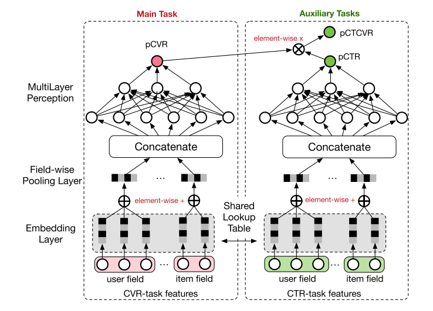

ESMM (Entire Space Multi-Task Model)
ESMM使用了多任务学习解决了CVR预测的bias问题，该算法由阿里巴巴提出。
CVR预测的挑战
- sample selection bias(SSB)问题
由于只有用户进行了点击，才能有后续的转化行为，所以我们会使用点击数据进行CVR的训练，但这样就会造成模型有偏，下图说明了该问题：

也就是说，用户没有点击的数据也可能产生转化，但我们无法得知，那这部分数据实际就浪费了。
- data sparsity(DS)问题
CTR模型通常使用曝光数据训练，所以CVR的训练数据会远小于CTR，这就造成了数据稀少的问题
进行多任务学习
公式定义
假设\(x\)是特征，\(y\)是是否点击，\(z\)是是否转化，那么：

另外，文中提到，\(pCTCVR\)和\(pCTR\)是对post-view数据建模的，\(pCVR\)是对post-click数据建模的，我查了下这两者的区别：
Post Click Conversions是指用户点击并转化发生在展示的这个广告上
Post View Conversions是指用户用户未点击展示的广告，但是在一定的时间窗口内又返回网站进行了转化
所以，我是这么理解的，\(pCTCVR\)涵盖了用户未点击广告但是进行了转化的情况（这样就能利用全量数据了，下面会详细解释）。
网络结构
然后，ESMM以\(pCVR\)为主任务，以\(pCTCVR\)和\(pCTR\)为辅助任务（Auxiliary Tasks），进行了如下的建模：

我们最终想要的是\(pCVR\)，但它在网络中只是一个临时变量，最后我们只会将\(pCTCVR\)和\(pCTR\)加入损失函数中。为什么这么做呢，因为这样子就可以用全量的数据了（即Entire Space），我们知道全量数据的点击情况，我们也知道全量数据曝光到转化的情况（包括中间未点击的），但是我们不知道全量数据点击到转化的情况，那么将CVR作为中间变量，我们就可以忽略掉这个问题了。 我们将loss公式化后：

另外要提一下的是，左右两边的Embedding是共享参数的，这样就解决了CVR数据稀少造成参数训练不足的问题。
参考
Entire Space Multi-Task Model: An Effective Approach for Estimating Post-Click Conversion Rate